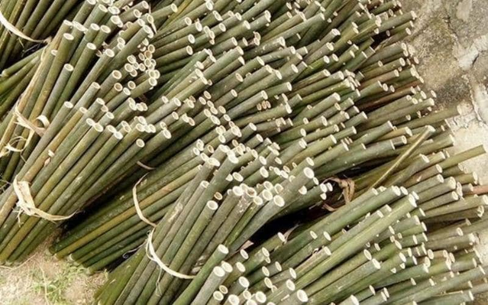
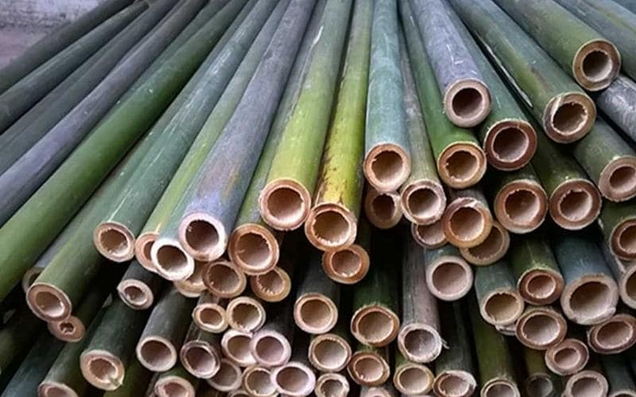
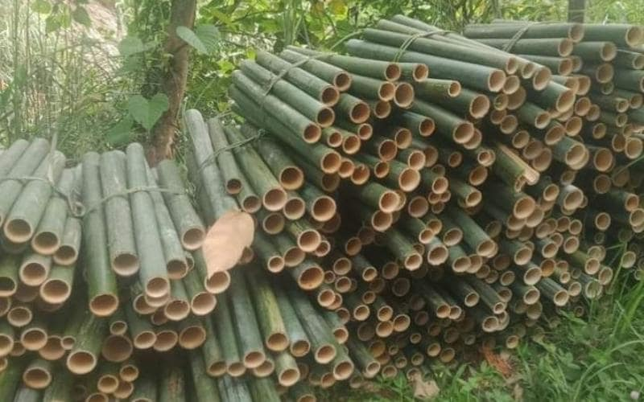
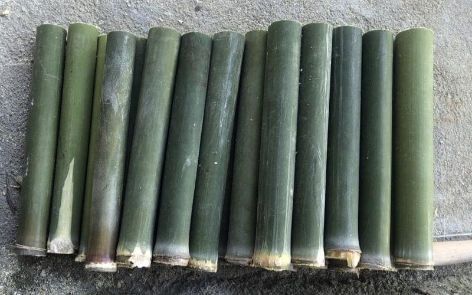

Cây nứa ngày nay không chỉ được biết đến như một loại tre trúc phổ biến trong tự nhiên, mà còn là nguồn nguyên liệu mang lại nhiều lợi ích thiết thực cho con người. Không chỉ có thể ăn được (với măng nứa được xem là món đặc sản ở nhiều vùng núi), cây nứa còn sở hữu giá trị kinh tế lớn nhờ dễ trồng, phát triển nhanh và đa dạng công dụng.
Hãy cùng theo dõi những thông tin dưới đây để khám phá rõ hơn về đặc điểm, công dụng và tiềm năng của cây nứa – loại vật liệu xanh đầy triển vọng trong đời sống hiện đại.
Cây nứa là cây gì?
Cây nứa là tên nông dân gọi chung cho các loại cây thuộc họ tre, cây tre nứa có thành thân mỏng. Cũng giống như các loại tre khác, có thân dạng búi và lớn quanh năm.
Ngoài giá trị dinh dưỡng cao, cây nứa còn là nguyên liệu thân thiện với môi trường trong xây dựng, công nghiệp và nông nghiệp.
Đặc điểm hình thái cây tre nứa
Thân
Với Cây nứa cây trưởng thành sẽ có chiều dài từ 10m đến 15m có nhiều lóng, cây sẽ thẳng đứng với cây trưởng thành, đường kính thân khoảng từ 4cm – 6cm. Lóng tre nứa dài từ 30cm đến 90cm. Vách nứa mỏng khoảng 0,2cm – 0,6cm.
Cành
Những chiếc măng nhỏ, hay còn gọi là càng nứa nhỏ mềm mọc ra từ thân cây. Mỗi đốt có nhiều nhánh và kích thước cảnh trung bình từ 50cm đến 70 cm.
Lá
Lá hình mác. Phiến lá dài trung bình 10-30cm, rộng trung bình 3-7 cm. Lá nhọn và hơi nghiêng sang một bên. Mặt lá có gân nổi rõ, cuống lá dài 0,2-0,7 cm. Mặt dưới phiến lá có lông mịn bao phủ.
Mo
Mo cây tre nứa cao từ 22-24 cm và được bao phủ bởi lớp lông trắng mịn. Mép mo có lông dài và cao ở hai đầu. Các bẹ dài khoảng 34cm và kệ trên rộng bằng 1/3 chiều rộng của kệ dưới.
Phiên mo có dạng thon, cao khoảng 7,5 cm đến 9cm, đầu hẹp và bề ngang trung bình từ 2,2 cm đến 2,4 cm. Mặt trong các phiên mo được bao phủ bởi lớp lông mịn, ở phía đáy lớp lông này chúng cứng hơn và dài hơn.
Hoa
Hoa tre nứa có màu vàng nhạt. Nhụy hoa thì màu vàng tươi, có bao phấn bên trong. Hoa mọc thành chùm từ các đốt thân. Bao hoa không phát triển.
Phân bố cây nứa

Theo kết quả điều tra rừng quốc gia, ở nước ta cây nứa phân bố từ Bắc vào Nam ở hầu hết các tỉnh: Thanh Hóa, Nghệ An và các khu vực Tây Nguyên như Đắk Lắk, Kon Tum, Lâm Đồng…
Ứng dụng cây tre nứa
Giống như các loại cây khác trong họ tre, cây nứa có rất nhiều công dụng, có thể kể đến như:
Nghề sản xuất: Cây tre nứa dùng để làm thúng, rổ, rá, sản xuất nông cụ, sản xuất cọc ép, bè nổi, cán cày, cán cuốc, xẻng… phục vụ đời sống hàng ngày và sản xuất nông nghiệp của người nông dân. Thi công chuồng trại, lán, phên tre, vách ngăn, ốp tường, hàng rào, tiểu cảnh,.. Giúp ích cho ngành xây dựng.
- Trong lĩnh vực nội thất, vật liệu tre nứa được sử dụng làm bàn, ghế, tủ, giường tre, sofa, tủ đầu giường, kệ bếp, kệ, đèn tre, v.v.
- Trong lĩnh vực thủ công mỹ nghệ, tre nứa được chế biến thành lưỡi cày, sọt tre, hộp các tông, đồ lưu niệm, v.v.
- Trong chế độ ăn uống, măng được dùng để xào, nấu, ngâm chua rất ngon.
Ngoài ra, các thanh tre nứa còn được dùng để làm món cơm lam mang đậm bản sắc văn hóa dân tộc. Trong công nghiệp, tre được dùng để làm giấy, ván ép, chất đốt, v.v…
Kỹ thuật trồng trọt cây nứa rừng

Kỹ thuật gây giống và trồng cây
Cây tre nứa rất dễ trồng bằng nhiều phương pháp nhân giống. Bà con có thể sử dụng kỹ thuật trồng bằng thân rễ, thân khí sinh, giâm rễ hoặc chiết cành.
Khi chọn giống cần chú ý chọn những cây bụi sinh trưởng tốt, không bị ra hoa, không bị sâu bệnh, điều kiện sinh trưởng tốt. Cây con tốt nhất là bảy đến tám tháng tuổi.
Chăm sóc
Sau khi trồng bà con cần tưới nước cho cây. Điều này sẽ cho phép rễ phát triển nhanh chóng và tiếp xúc tối ưu với đất. Bón phân cho cây hai lần một năm. Phiên đầu tiên sẽ được tổ chức một tháng trước khi quay. Sau khi thu hoạch măng, công đoạn chuẩn bị thứ hai được tiến hành.
Cũng cần làm cỏ thường xuyên, thu gom cỏ dại và lá rụng ở gốc. Điều này sẽ làm cho măng nhiều và mập hơn.
Khai thác
Cây nứa cho thu hoạch sớm hơn các loại tre khác. Cây có thể thu hoạch sau khoảng hai năm sau khi trồng. Nên làm vào mùa đông để hạn chế điều kiện vật liệu bị mối mọt.
Sau khi thu hoạch, nứa sẽ được ngâm hoặc xông khói ngay để đảm bảo giá trị thương mại của nguyên liệu.

Cây tre nứa mang lại cho con người nhiều lợi ích, ứng dụng phổ biến trong cuộc sống, mà cách trồng và chăm sóc lại rất đơn giản. Hy vọng bài viết đã mang đến cho bạn những kiến thức bổ ích.
Nếu bạn đang tìm nguồn cung cấp sỉ và lẻ nguyên vật liệu hay thi công công trình tre trúc, hãy liên hệ với TRE VIỆT BUILDING để được hỗ trợ 24/7 hoàn toàn miễn phí. qua hotline: 093.123.5757
CÔNG TY TRÁCH NHIỆM HỮU HẠN TRE VIỆT
BUILDING
Địa chỉ: 917 Phạm Văn Đồng, Phường Linh Xuân, Thành phố
Hồ Chí Minh
Nhà máy sản xuất: Phú Hợp B, Xã Phú Lâm, Đồng Nai.
Điện thoại – Zalo: 093.123.5757
Email: info@treviet.com.vn